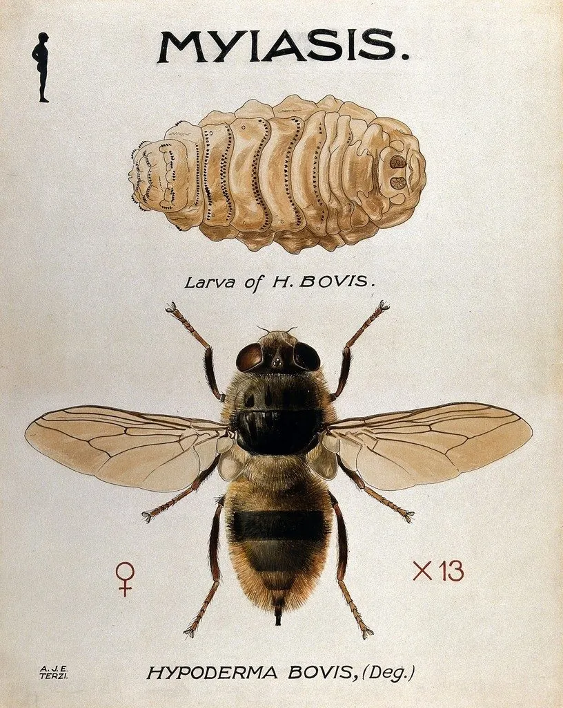

昆虫 · 动物界
牛皮蝇 Hypoderma bovis

幼虫寄生在牛背部皮下、形成隆起脓包的苍蝇，成虫不取食，是养牛业重点防治的寄生虫，也是牛皮质量下降的常见原因。
- 分类
- 门节肢动物门纲昆虫纲目双翅目科狂蝇科属皮蝇属
- 栖息环境
- 牛舍和牧场，幼虫寄生于牛背部皮下
- 地理分布
- 北半球养牛地区，中国北方牧区有分布
- 保护级别
- 暂无评估
物种志
牛皮蝇成虫体长 13–15 mm，体表密布黑褐色和黄褐色绒毛，外形似蜜蜂；口器退化，成虫不吸血也不取食。它的幼虫期全部在牛体内度过，是典型的专性寄生虫。
牛皮蝇分布于北半球的养牛地区。雌蝇在牛的腿部产卵，幼虫孵化后钻入皮肤，在体内移行到背部皮下，形成一个个隆起的“脓包”，并在皮下发育数月，成熟后钻出落地化蛹。幼虫寄生会损害牛皮质量、引起牛只疼痛、烦躁和生长受阻，严重感染时造成明显经济损失。防治主要依靠定期驱虫、清除牛体上的幼虫包囊和改善饲养环境。目前它没有IUCN 的正式评估，中国未将其列入国家重点保护野生动物名录。
形态与习性
- 食性成虫口器退化、不取食，幼虫寄生在牛皮下的组织中
- 体长13–15 mm
- 生活史幼虫钻入皮肤后移行到背部皮下，发育数月后钻出化蛹
- 危害损害牛皮质量，引起牛只疼痛、烦躁和生长受阻
- 繁殖雌蝇在牛腿部的毛上产卵
- 防治定期驱虫、清除幼虫包囊、改善饲养环境
趣味知识
- 牛皮蝇的幼虫在牛背皮下发育，会鼓起核桃大小的脓包。
- 成虫口器退化，不吸血也不取食，寿命只有几天。
- 牛皮蝇会损害皮革质量，是养牛业重点防治的寄生虫。